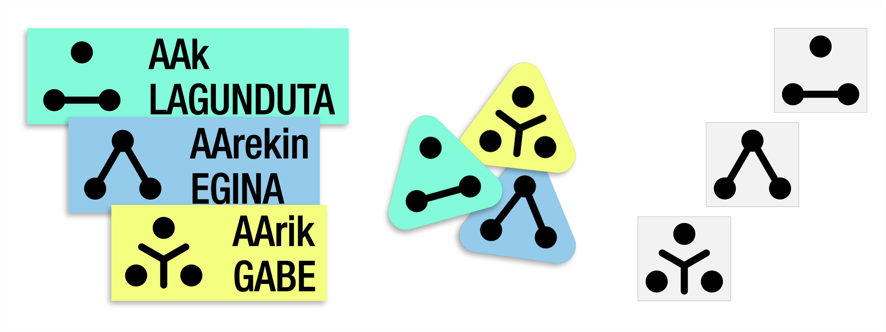
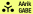
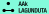

AA etiketa
AAk sortutako artefaktuen uholdea bizi dugun honetan, beharrezkoa gerta daiteke obrak etiketatzea ikusten ari garen edukiaren jatorria argitzeko. Gardentasun eta etika arrazoiak direla eta, AA nola (eta zenbat) erabili den ulertzeak proiektu baten egiletzari buruzko nahasmena eta gaizki-ulertuak saihesten laguntzen du. Seinale hauek etiketatutako obren gaineko nolabaiteko kontrola berreskuratzeko tresna dira, dela AAren erabilera sustatzeko, dela kritikatzeko.
Etiketak helburu honekin diseinatu dira eta hiru ikur dira, CC 0 lizentziapean argitara emanak; honek esan nahi du domeinu publikokoak direla eta nahi bezala deskargatu eta erabili ditzakezula.

Lehenengo etiketa, AArik EZ, triangelu ikusezin baten erpinetan kokatutako hiru zirkuluk osatua da. Hiru segmentu hedatzen dira triangeluaren alboetatik erdigunerantz, Y letra osatuz. Grafikoki, sinboloa hiru giza-silueta gisa interpreta daiteke (burua irudikatzen duen zirkulua eta gorputza osatzen duen Y), edo, goitik ikusita, mahai edo tailer baten inguruan kolaboratzen ari diren hiru pertsona bezala.

Bigarren etiketak, AAk LAGUNDUTA, aurreko logotipoaren hiru zirkulu berberak ditu. Y formaren ordez, triangeluaren beheko bi zirkuluak lotuta agertzen dira, oinarri bat osatuz. Lotura honek zimendua adierazten du: giza sortzaile batek bere proiektua garatzeko oinarritzat hartzen duen euskarria. Oinarri horren gainean kokatutako zirkuluak martxan dagoen lana sinbolizatzen du.

Azken etiketak, AArekin EGINA, zirkuluen triangelu-formako antolamendua erabiltzen du berriro. Oraingoan, bi segmentuk triangeluaren aldeak lotzen dituzte, "artifiziala" hitzaren A lehen letra horren forma sortuz. Hemen, hiruki formako ikurra nabarmenagoa egiten da, ohartarazpen seinale bat gogora ekarriz eta lana AAk sortu duela nabarmenduz.
Sailkapen-sistema hau egoera errealetan erabiliz probatu beharra dago, eta izan ditzakeen alborapenak aitortu beharko lirateke, eraginkortasuna bermatzeko. Sinboloen aplikazioarekin batera, ikuspegi trebatu eta ahalik eta objektiboena baliatu behar da, aurreiritziak saihestuz.